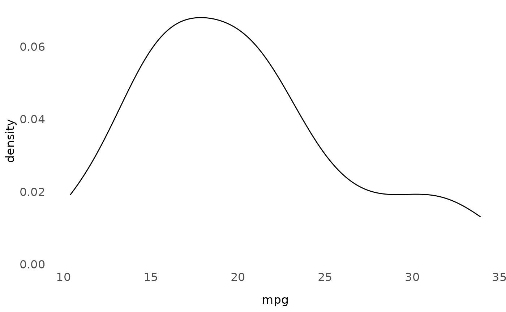
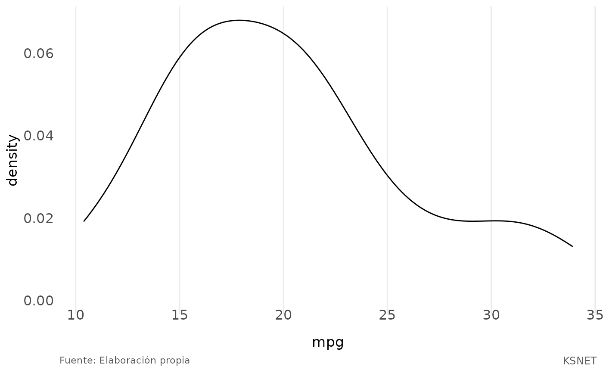

Theme KSNET fot ggplots
theme_ksnet_light.RdThis is one of the available ksnet themes for plots. Its parameters
are just those specified within theme function. When an argument
is not accesible with this function, it can be combined with another
specific theme.
Uso
theme_ksnet_light(
legend_position = "right",
is_x_date = FALSE,
caption_ksnet = FALSE,
x_vjust = 4,
remove_grid_major_y = TRUE,
remove_grid_major_x = TRUE,
title_size = 14.5,
subtitle_size = 12.5,
x_size = 12.5,
y_size = 12.5,
axis_x_size = 12,
axis_y_size = 12,
plot_font = "Public Sans"
)Argumentos
- legend_position
character vector. Default is right.
- is_x_date
when x axis represents a date vector set to TRUE to adjust vjust.
- caption_ksnet
Logical. Set to TRUE when using
ksnet::caption_ksnet. See Examples.- x_vjust
numeric. Default 4.
- remove_grid_major_y
logical. Default TRUE.
- remove_grid_major_x
logical. Default TRUE.
- title_size
numeric. Default 14.5.
- subtitle_size
numeric. Default 12.5.
- x_size
numeric. Axis title size. Default 12.5.
- y_size
numeric. Axis title size. Default 12.5.
- axis_x_size
numeric. Axis text size. Default 12.
- axis_y_size
numeric. Axis text size. Default 12.
- font_family
default is Public Sants. But is is necessary to have it installed. See Details.
Detalles
At the beginning of your script, after having installed Public Sans font, you should write the following code to load the font: windowsFonts('Public Sans'='Public Sans')
Ejemplos
library(ggplot2)
ggplot(mtcars,aes(mpg))+
geom_density()+
labs( caption = 'Fuente: Elaboración propia' )+
theme_ksnet_light()

## gráfico divulgativo con la etiqueta KSNET
ggplot(mtcars,aes(mpg))+
geom_density()+
labs( caption = ksnet::caption_ksnet( 'Fuente: Elaboración propia' ))+
theme_ksnet_light( caption_ksnet = TRUE,
remove_grid_major_x = FALSE)
#> Warning: Vectorized input to `element_text()` is not officially supported.
#> ℹ Results may be unexpected or may change in future versions of ggplot2.
